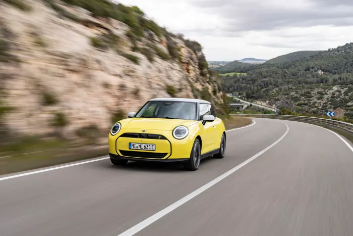
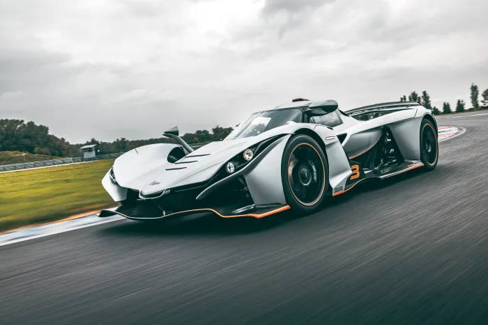
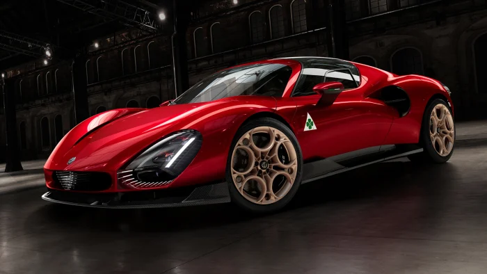
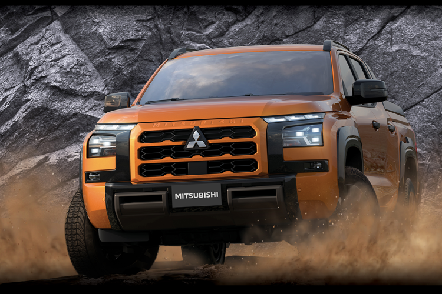

mini-electric-cooper-and-aceman-for-us-market-scraped
December 6, 2024
Mini enthusiasts in the United States hoping for the electric Cooper and Aceman will have to wait. Mini confirmed it has deferred plans to introduce these models to the U.S. and Canadian markets indefinitely.
Read more...

Meet the Praga Bohema, the $1.5M Czech supercar turning heads worldwide
December 5, 2024
A Czech company once known for its cars but made truck parts under Communist rule is roaring back into the automotive spotlight with a new supercar priced at $1.5 million.
Read more...

The breathtaking Alfa Romeo 33 Stradale is the brand's newest bespoke supercar
December 5, 2024
Every now and then, Alfa Romeo will unveil something totally unique. The 8C came out in the 2000s, the Disco Volante in the 2010s, and the Viper-based TZ3 Stradale to go with it. In short, the company doesn’t shy away from building truly special cars to flex that their design prowess is still alive and well.
Read more...

Mitsubishi Triton Wins 2024-2025 Japan Car of the Year Design Award
December 5, 2024
The all-new Mitsubishi Triton pickup has clinched the prestigious Design Car of the Year title at the 2024-2025 Japan Car of the Year awards. This marks Mitsubishi's second consecutive win, following the recognition of the Delica Mini last year.
Read more...